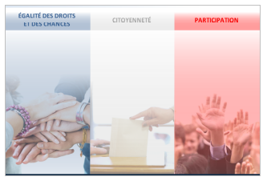

Notre histoire
Notre équipe composée de professionnels du secteur médico-social et de la formation a vu les demandes et attentes des publics évoluer. Dans la visée d’établir un parcours inclusif de la personne en situation de handicap au sein de la société, nous avons croisé nos talents, nos compétences et nos humanités.
Face au constat d’inaccessibilité à certaines dimensions de la société pour les personnes les plus fragiles, Qualité Sens agit pour apporter les solutions nécessaires à l’inclusion de tous, enjeu sociétal majeur. Ainsi, nous avons imaginé d’associer une méthode pédagogique immersive et les NTIC (Nouvelles Technologies de l’Information et de la Communication) pour sensibiliser au plus près du vécu. En effet, notre jeu de plateau géant, combine la mise en situation « de fragilité » allié à un parcours pédagogique alliant quiz, vidéos, défis, cas pratique avec l’appui de supports numériques.
« Une société dite "inclusive" s'adapte aux différences de la personne, va au devant de ses besoins afin de lui donner toutes les chances de réussite dans la vie. L'inclusion exige donc, pour s'appliquer entièrement, la mobilisation et la volonté collectives des corps social, politique et économique afin de repenser leurs modes de réflexion et d'organisation pour l'intégration des personnes les plus fragiles. Le Monde.fr | 07.10.2011 | Par Guy Hagège, président de la Fegapei »

Raison d’être
Créer l'environnement favorable à l'inclusion des publiques fragiles pour créer les conditions de leurs réussites
-> En s’appuyant sur les prérogatives politiques et législatives actuelles, Qualité Sens a pour ambition de faciliter l’inclusion sociale par une approche aux savoirs différenciée, adaptée et novatrice.
L’écosystème d’apprentissages, développé par Qualité Sens, répond aux besoins d’inclusion dans les domaines suivants :


Exemples d’apprentissages accompagnement dans les services à la personne et pour les travailleurs ESAT :
Qualité Sens propose des formations en e-learning dédiées aux personnes en situation de handicap dans un format unique aux nombreux avantages : association de différents médias (vidéos, documents, évaluation, personnages, exercices, sous titrage, voix
off) pour une accessibilité universelle et une nouvelle manière d’apprendre à son rythme et s’ouvrir à de nouvelles compétences.
http://offrelearning.fr/esat/story.html
Nos objectifs
« L’autre est différent, certes. Il ne s’agit pas de nier cette différence, ou de prétendre l’oublier, mais d’en tirer parti. Car la vie se nourrit de différences ; l’uniformité mène à la mort. » Albert Jacquart
Vous offrir une pédagogie innovante à la hauteur de ces enjeux et de votre engagement
Une pédagogie immersive : Savoir pour apprendre à être et à agir
Cette pédagogie permet d’allier les savoir-faire (rapidité de mise en œuvre et développement des compétences) et l’engagement actif des collaborateurs.
Cette formation ambitionne une autre relation au savoir et à la construction des connaissances pour un vivre ensemble en réciprocité par :
- - Des méthodes opérationnelles plus qu’une documentation exhaustive
- - Les individus et leurs interactions plus que le processus et les outils
- - L’adaptation au changement de regard sur l’autre plus que le suivi d’un plan
Une approche positive :
L’acceptation de soi et de son alter ego, une pédagogie de la responsabilisation de soi : Au-delà de la différence, sensibilisation à la vie des personnes et au changement de positionnement professionnel
- - L’approche positive, une conception globale et préventive de l’intervention, la révolution dont il est question ici consiste à donner du pouvoir aux personnes et leur offrir des options, afin qu’elles puissent réaliser des choix personnels qui sont similaires aux décisions qui nous attendent tous dans nos propres vies
Des apprentissages horizontaux :
L’échange entre pairs facilite l’intelligence inter-personnelle pour aboutir à la construction de solutions partagées.
Nos valeurs
Dans le contexte du champ de l’économie sociale et solidaire (ESS), Qualité Sens s’inscrit de fait dans cette volonté de développer un entreprendre autrement et en respecte les règles :
- - Ensemble (avec tous les partenaires de proximité et régionaux
- - Solidaire (accès à tous aux savoirs)
- - Du progrès (en alliant les Nouvelles Technologies de l’Information (NTIC) à une pédagogie immersive)
- - Démocratique (par la mise en œuvre d’un système collaboratif au sein de notre entreprise)